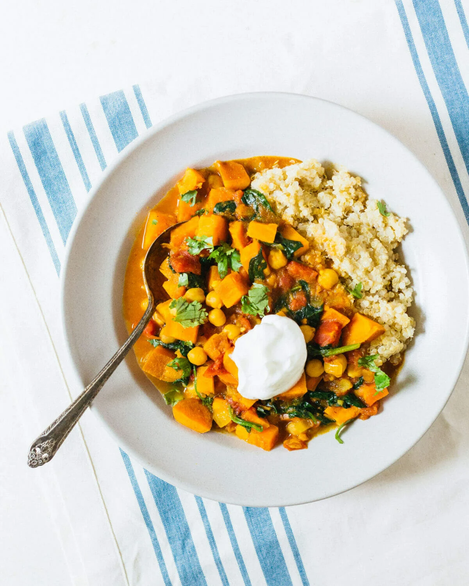

Chickpea Stew

Description:
Here’s a healthy dinner idea that’s so hearty and satisfying,
it will please everyone around the table: Moroccan Chickpea Stew!
In fact, it’s one of our top plant based recipes. Why?
It’s ultra flavorful, with a blend of cozy spices that accentuate nutrient rich vegetables:
sweet potatoes, chickpeas, tomatoes and spinach. Serve it with quinoa for a tasty plant based dinner that’s also gluten free.
If you like, a dollop of Greek yogurt: and most definitely a squeeze of lemon to brighten the flavors!
Ingredients
- Onion and garlic
- Sweet potatoes
- Canned tomatoes
- Chickpeas
- Spinach
- Olive oil
- Vegetable broth
- Moroccan spice blend: A blend of savory and sweet spices:
paprika, cumin, coriander and turmeric on the savory side, and ginger and cinnamon on the sweet side.
Cinnamon in particular is traditionally used in Moroccan savory stews.
Steps
- Make the quinoa using the stovetop method or Instant Pot method. When it’s done, sprinkle with a little kosher salt to taste.
- Dice the onion and mince the garlic. Chop the sweet potatoes into bite-sized pieces.
- In a large pot, heat the olive oil. Sauté the onion for about 5 minutes. Add the minced garlic and sauté about 1 minute.
- Stir in the paprika, cumin, coriander, turmeric, ginger, cinnamon, kosher salt, black pepper, andcayenne pepper. Stir about 30 seconds, then add diced tomatoes and broth.
- Bring to a boil, then add sweet potatoes and drained and rinsed chickpeas. Simmer 25 to 30 minutes until the potatoes are tender. Stir in the spinach in the last 2 minutes.
- Serve over the quinoa, garnished with chopped cilantro, fresh squeezed lemon juice, and a dollop of Greek yogurt.
Return to top of page
Return to home page